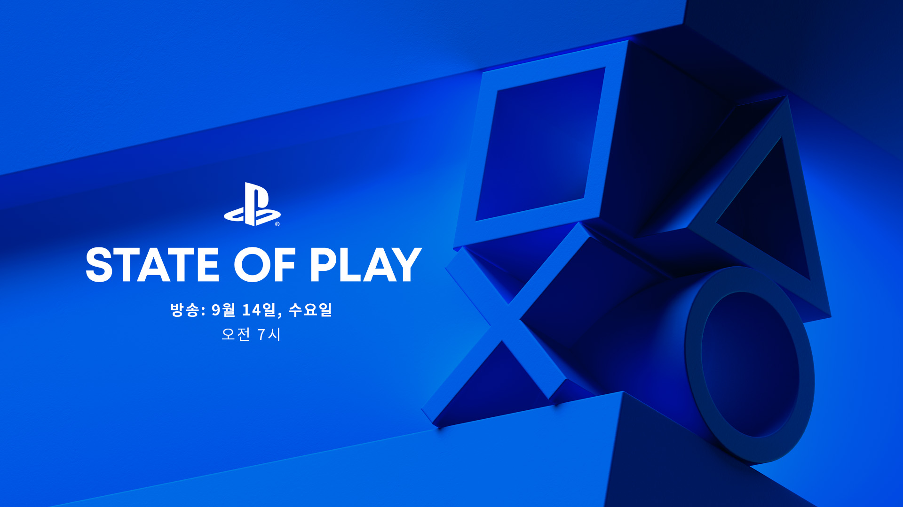
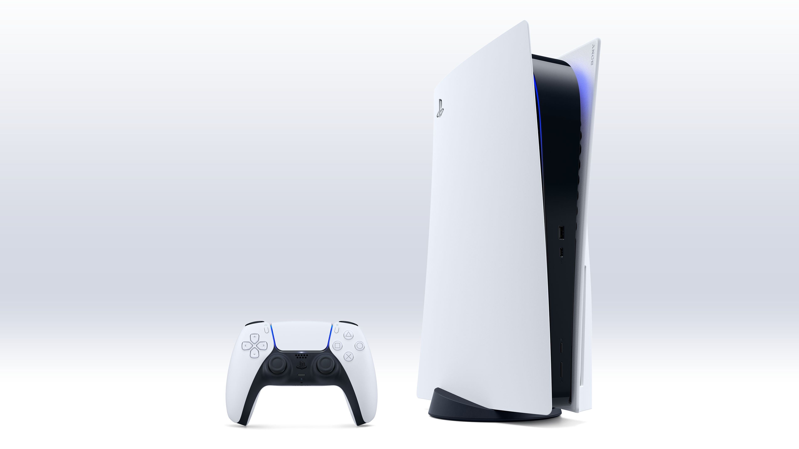
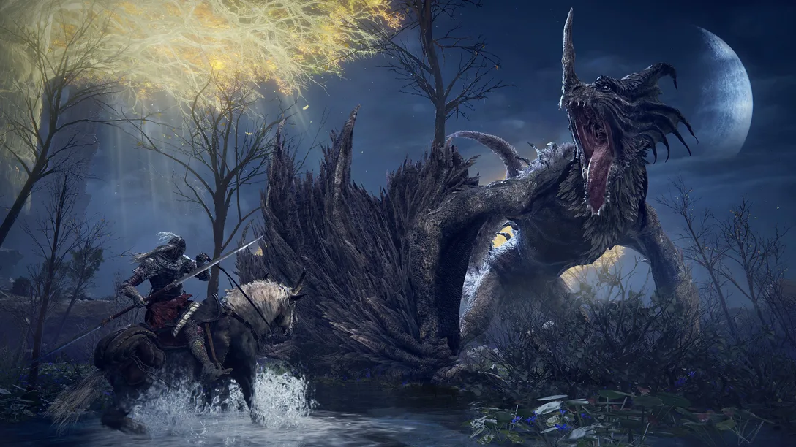
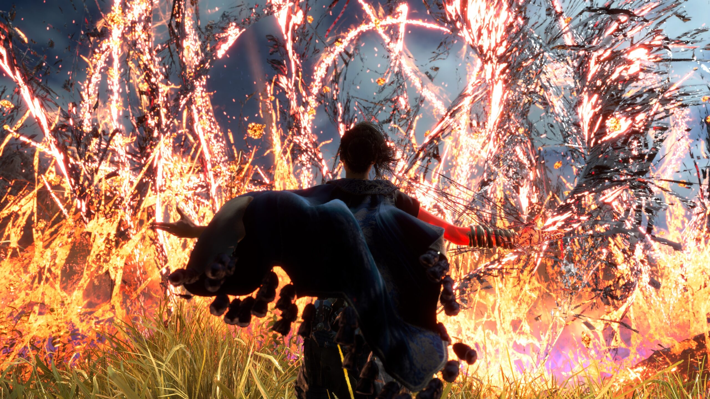

게임
하드웨어
서비스
뉴스
구입
고객지원
환상적인 차세대 PlayStation 게임을
마음껏 즐겨보세요.
PS5콘솔 살펴보기
PLAYSTATION 최신뉴스

내일 9월 14일, State of Play가 돌아옵니다

새로운 PS5 시스템 소프트웨어 업데이트가 오늘 전 세계에 배포됩니다

Elden Ring의 작곡가인 사이토 츠카사가 게임의 음악과 좋아하는 트랙에 대해 얘기합니다

Forspoken이 짜릿한 전투를 위해 빠른 속도의 주문과 마법 기반의 파쿠르를 결합한 방법